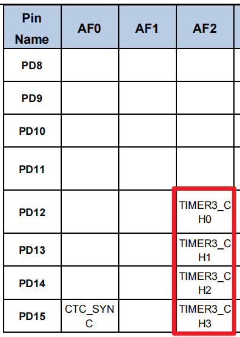

<!DOCTYPE lake>
<h1 data-lake-id="tsfX0" id="tsfX0"><span data-lake-id="u1f211568" id="u1f211568"> 学习目标</span></h1><ol list="u7c1395b0"><li data-lake-id="u65fb8531" fid="u1986649e" id="u65fb8531"><span data-lake-id="ua5692fff" id="ua5692fff">加强掌握PWM开发流程</span></li><li data-lake-id="uebba92db" fid="u1986649e" id="uebba92db"><span data-lake-id="u726b1ca5" id="u726b1ca5">理解定时器与通道的关系</span></li><li data-lake-id="u3e4a00f9" fid="u1986649e" id="u3e4a00f9"><span data-lake-id="u3484d856" id="u3484d856">掌握多通道配置策略</span></li><li data-lake-id="ub07173ca" fid="u1986649e" id="ub07173ca"><span data-lake-id="u2f3e0b29" id="u2f3e0b29">掌握定时器查询方式</span></li><li data-lake-id="u7ae9f63e" fid="u1986649e" id="u7ae9f63e"><span data-lake-id="ud210763b" id="ud210763b">掌握代码抽取优化策略</span></li></ol><h1 data-lake-id="XigSZ" id="XigSZ"><span data-lake-id="u5d72dcd9" id="u5d72dcd9">学习内容</span></h1><h2 data-lake-id="wF38v" id="wF38v"><span data-lake-id="u11802db3" id="u11802db3">需求</span></h2><p data-lake-id="u7484dc9e" id="u7484dc9e"></p><p data-lake-id="ue67b0f57" id="ue67b0f57"></p><p data-lake-id="u3167325c" id="u3167325c"><span data-lake-id="ude6556dc" id="ude6556dc">点亮4个灯，采用pwm的方式。</span></p><table class="lake-table" data-lake-id="TxNDm" id="TxNDm" margin="true" style="width: 446px" width-mode="contain"><colgroup><col width="89"/><col width="93"/><col width="88"/><col width="88"/><col width="88"/></colgroup><tbody><tr data-lake-id="u52490f90" id="u52490f90"><td data-lake-id="u6c0acff7" id="u6c0acff7" style="vertical-align: middle"><p data-lake-id="u83667905" id="u83667905" style="text-align: center"><span data-lake-id="ubd803a1f" id="ubd803a1f">定时器</span></p></td><td data-lake-id="u72d9ad3b" id="u72d9ad3b" style="vertical-align: middle"><p data-lake-id="ueac5cd46" id="ueac5cd46" style="text-align: center"><span data-lake-id="u936ed184" id="u936ed184">通道</span></p></td><td data-lake-id="uada67d28" id="uada67d28" style="vertical-align: middle"><p data-lake-id="ub8900edf" id="ub8900edf" style="text-align: center"><span data-lake-id="u05723bb6" id="u05723bb6">引脚</span></p></td><td data-lake-id="u71c346e1" id="u71c346e1" style="vertical-align: middle"><p data-lake-id="u4f31a00f" id="u4f31a00f" style="text-align: center"><span data-lake-id="u7556834f" id="u7556834f">AF</span></p></td><td data-lake-id="u949eb4a0" id="u949eb4a0" style="vertical-align: middle"><p data-lake-id="ua15bb631" id="ua15bb631" style="text-align: center"><span data-lake-id="u272bc8ed" id="u272bc8ed">LED序号</span></p></td></tr><tr data-lake-id="u6c0b894f" id="u6c0b894f"><td data-lake-id="uddfc0eef" id="uddfc0eef" rowspan="4" style="vertical-align: middle"><p data-lake-id="u5274066d" id="u5274066d" style="text-align: center"><span data-lake-id="ua2278dcf" id="ua2278dcf">T3</span></p></td><td data-lake-id="u53758375" id="u53758375" style="vertical-align: middle"><p data-lake-id="ude9e40e0" id="ude9e40e0" style="text-align: center"><span data-lake-id="uf8b2fdb8" id="uf8b2fdb8">CH0</span></p></td><td data-lake-id="u98b8ee2c" id="u98b8ee2c" style="vertical-align: middle"><p data-lake-id="u20cd1581" id="u20cd1581" style="text-align: center"><span data-lake-id="u484bd336" id="u484bd336">PD12</span></p></td><td data-lake-id="u3f69879e" id="u3f69879e" style="vertical-align: middle"><p data-lake-id="u94872232" id="u94872232" style="text-align: center"><span data-lake-id="u6f56f1e6" id="u6f56f1e6">AF2</span></p></td><td data-lake-id="u07f2a21c" id="u07f2a21c" style="vertical-align: middle"><p data-lake-id="uac030072" id="uac030072" style="text-align: center"><span data-lake-id="u5b9d7454" id="u5b9d7454">LED5</span></p></td></tr><tr data-lake-id="ud4032bd2" id="ud4032bd2"><td data-lake-id="u25ac4f52" id="u25ac4f52" style="vertical-align: middle"><p data-lake-id="u4827f040" id="u4827f040" style="text-align: center"><span data-lake-id="ub6c27765" id="ub6c27765">CH1</span></p></td><td data-lake-id="u40a4f5eb" id="u40a4f5eb" style="vertical-align: middle"><p data-lake-id="u4a388642" id="u4a388642" style="text-align: center"><span data-lake-id="u5f88397b" id="u5f88397b">PD13</span></p></td><td data-lake-id="ue386a268" id="ue386a268" style="vertical-align: middle"><p data-lake-id="u4f9b76d0" id="u4f9b76d0" style="text-align: center"><span data-lake-id="u249e00d1" id="u249e00d1">AF2</span></p></td><td data-lake-id="u1928ae73" id="u1928ae73" style="vertical-align: middle"><p data-lake-id="u2842706b" id="u2842706b" style="text-align: center"><span data-lake-id="uaef0d932" id="uaef0d932">LED6</span></p></td></tr><tr data-lake-id="u395ef838" id="u395ef838"><td data-lake-id="uc8650c25" id="uc8650c25" style="vertical-align: middle"><p data-lake-id="ud0183968" id="ud0183968" style="text-align: center"><span data-lake-id="u845a9716" id="u845a9716">CH2</span></p></td><td data-lake-id="u1efb33c3" id="u1efb33c3" style="vertical-align: middle"><p data-lake-id="u7f203e52" id="u7f203e52" style="text-align: center"><span data-lake-id="u217469b9" id="u217469b9">PD14</span></p></td><td data-lake-id="u242d50de" id="u242d50de" style="vertical-align: middle"><p data-lake-id="u62f123f6" id="u62f123f6" style="text-align: center"><span data-lake-id="u796a7cdf" id="u796a7cdf">AF2</span></p></td><td data-lake-id="uecb141a0" id="uecb141a0" style="vertical-align: middle"><p data-lake-id="u58e05c9b" id="u58e05c9b" style="text-align: center"><span data-lake-id="u6e1b8f78" id="u6e1b8f78">LED7</span></p></td></tr><tr data-lake-id="uf2e0159a" id="uf2e0159a"><td data-lake-id="ufd33266c" id="ufd33266c" style="vertical-align: middle"><p data-lake-id="u657725df" id="u657725df" style="text-align: center"><span data-lake-id="u46691dbf" id="u46691dbf">CH3</span></p></td><td data-lake-id="ubc25b0d1" id="ubc25b0d1" style="vertical-align: middle"><p data-lake-id="u4d8c53da" id="u4d8c53da" style="text-align: center"><span data-lake-id="ufcecf3c6" id="ufcecf3c6">PD15</span></p></td><td data-lake-id="ub68d7c96" id="ub68d7c96" style="vertical-align: middle"><p data-lake-id="udaaafdc8" id="udaaafdc8" style="text-align: center"><span data-lake-id="u4997a8ae" id="u4997a8ae">AF2</span></p></td><td data-lake-id="uab6661d1" id="uab6661d1" style="vertical-align: middle"><p data-lake-id="u97bd8fab" id="u97bd8fab" style="text-align: center"><span data-lake-id="u84bec87c" id="u84bec87c">LED8</span></p></td></tr></tbody></table><p data-lake-id="ud4792b9a" id="ud4792b9a"><span data-lake-id="u26baa880" id="u26baa880">实现LED5, LED6, LED7, LED8呼吸灯效果</span></p><h2 data-lake-id="zQ4uI" id="zQ4uI"><span data-lake-id="uc1f91081" id="uc1f91081">通用定时器多通道</span></h2><p data-lake-id="u17cf6cce" id="u17cf6cce"><span data-lake-id="uf1ee1a84" id="uf1ee1a84">点亮T3定时器下的多个通道的灯。</span></p><h3 data-lake-id="NbKl3" id="NbKl3"><span data-lake-id="u068ba4a4" id="u068ba4a4">开发流程</span></h3><ol list="u51965e50"><li data-lake-id="u16d91a0c" fid="udaef0291" id="u16d91a0c"><span data-lake-id="ub66ef26b" id="ub66ef26b">添加Timer依赖</span></li><li data-lake-id="u04a778bc" fid="udaef0291" id="u04a778bc"><span data-lake-id="u98b5cbc6" id="u98b5cbc6">初始化PWM相关GPIO</span></li><li data-lake-id="u1e249e52" fid="udaef0291" id="u1e249e52"><span data-lake-id="uaaa9b6ff" id="uaaa9b6ff">初始化PWM，包含多通道配置</span></li><li data-lake-id="ud1b844e9" fid="udaef0291" id="ud1b844e9"><span data-lake-id="u4be97221" id="u4be97221">PWM占空比控制</span></li></ol><h3 data-lake-id="oTMya" id="oTMya"><span data-lake-id="uf3ed8860" id="uf3ed8860">多通道配置</span></h3><span class="yuque-card-unsupported">[codeblock]</span><p data-lake-id="u606dfe34" id="u606dfe34"><span data-lake-id="ue1de90a0" id="ue1de90a0">输出比较模式</span></p><ul list="ud68db03c"><li data-lake-id="ue9897960" fid="ube7a24be" id="ue9897960"><span data-lake-id="ua1f91ec3" id="ua1f91ec3">TIMER_OC_MODE_PWM0： 高电平有效</span></li><li data-lake-id="ufc7b0d6c" fid="ube7a24be" id="ufc7b0d6c"><span data-lake-id="u9e4ea4a5" id="u9e4ea4a5">TIMER_OC_MODE_PWM1：低电平有效</span></li></ul><h3 data-lake-id="wvgA0" id="wvgA0"><span data-lake-id="u49faa34f" id="u49faa34f">占空比更新</span></h3><span class="yuque-card-unsupported">[codeblock]</span><h3 data-lake-id="XDTzY" id="XDTzY"><span data-lake-id="u9cfe9bb6" id="u9cfe9bb6">完整代码</span></h3><span class="yuque-card-unsupported">[codeblock]</span><h2 data-lake-id="YyidY" id="YyidY"><span data-lake-id="u24da8bbe" id="u24da8bbe">高级定时器通道输出</span></h2><p data-lake-id="uaaf08561" id="uaaf08561"><span data-lake-id="u6485ac7e" id="u6485ac7e">高级定时器只有TIMER0和TIMER7支持。由于扩展板上的高级定时器没有对应的LED，我们可以使用跳线的方式，将TIMER0CH0对应的PE8引脚，短接到PD8（LED1）上，通过观察LED1的亮灭，了解是否正确输出。</span></p><h3 data-lake-id="cdkfk" id="cdkfk"><span data-lake-id="u89f4554a" id="u89f4554a">开发流程</span></h3><ol list="u89957fac"><li data-lake-id="u4662c751" fid="udaef0291" id="u4662c751"><span data-lake-id="uc231468a" id="uc231468a">添加Timer依赖</span></li><li data-lake-id="ua2ba4028" fid="udaef0291" id="ua2ba4028"><span data-lake-id="uf62d6d5c" id="uf62d6d5c">初始化PWM，包含多通道配置</span></li><li data-lake-id="uacad83c3" fid="udaef0291" id="uacad83c3"><span data-lake-id="uc7608789" id="uc7608789">Break配置</span></li><li data-lake-id="u25a39d09" fid="udaef0291" id="u25a39d09"><span data-lake-id="ue7eaa9ff" id="ue7eaa9ff">PWM占空比控制</span></li></ol><h3 data-lake-id="WXa6G" id="WXa6G"><span data-lake-id="u875a65be" id="u875a65be">通道配置</span></h3><span class="yuque-card-unsupported">[codeblock]</span><ul list="ub742f362"><li data-lake-id="u31e0df8b" fid="u7cf1ec01" id="u31e0df8b"><span data-lake-id="ub848c57a" id="ub848c57a">特别强调，这里的引脚分为P和N类型，不同引脚要配置不同的输出状态</span></li></ul><h3 data-lake-id="b04IE" id="b04IE"><span data-lake-id="u68807032" id="u68807032">Break配置</span></h3><span class="yuque-card-unsupported">[codeblock]</span><ul list="u73ef7b3f"><li data-lake-id="u592dff5c" fid="u022b281c" id="u592dff5c"><span data-lake-id="u133c9cc1" id="u133c9cc1">breakstate：break状态开启</span></li><li data-lake-id="uba714142" fid="u022b281c" id="uba714142"><span data-lake-id="u3814310d" id="u3814310d">ouputostate：输出状态，自动开启</span></li><li data-lake-id="u16eede41" fid="u022b281c" id="u16eede41"><span data-lake-id="u8fc78b7c" id="u8fc78b7c">breakpolarity：输出极性，高电平</span></li></ul><p data-lake-id="u0b418314" id="u0b418314"><span data-lake-id="uf9e785ce" id="uf9e785ce">​</span><br/></p><p data-lake-id="u9c86100e" id="u9c86100e"><span data-lake-id="ua042adc6" id="ua042adc6">在ARM32中的高级定时器配置中，</span><code data-lake-id="u0e86aba6" id="u0e86aba6"><span data-lake-id="u073e9d8b" id="u073e9d8b">break</span></code><span data-lake-id="uc933e133" id="uc933e133">参数用于增强安全性和控制功能，特别是在电机控制或功率转换应用中，避免因故障导致不必要的输出操作。</span></p><p data-lake-id="u1d2b8b79" id="u1d2b8b79"><span data-lake-id="ub245159c" id="ub245159c">​</span><br/></p><p data-lake-id="u1b50cc9a" id="u1b50cc9a"><span data-lake-id="u3fabe710" id="u3fabe710">每个参数的作用和意义：</span></p><ol list="uc62a1ec8"><li data-lake-id="ub4103221" fid="u1e310568" id="ub4103221"><strong><span data-lake-id="u398160b8" id="u398160b8">runoffstate（溢出状态的运行）<br/></span></strong><span data-lake-id="u575f60ad" id="u575f60ad">参数示例：TIMER_ROS_STATE_DISABLE<br/></span><span data-lake-id="ua06e5b8c" id="ua06e5b8c">作用：当定时器运行状态切换到溢出状态时，是否自动关闭输出信号。DISABLE表示不进行自动关闭。</span></li><li data-lake-id="u12f57937" fid="u1e310568" id="u12f57937"><strong><span data-lake-id="uec2ea5ed" id="uec2ea5ed">ideloffstate（空闲状态的关闭）</span></strong><span data-lake-id="u0fc69fba" id="u0fc69fba"><br/></span><span data-lake-id="ucb357391" id="ucb357391">参数示例：TIMER_IOS_STATE_DISABLE<br/></span><span data-lake-id="uce1e8453" id="uce1e8453">作用：当定时器进入空闲状态时，是否自动关闭输出信号。DISABLE表示不进行关闭。</span></li><li data-lake-id="ue44b2b03" fid="u1e310568" id="ue44b2b03"><strong><span data-lake-id="u46c3481f" id="u46c3481f">deadtime（死区时间）</span></strong><span data-lake-id="uae865f79" id="uae865f79"><br/></span><span data-lake-id="u56c1a2e6" id="u56c1a2e6">参数示例：255<br/></span><span data-lake-id="u4b4b5ddb" id="u4b4b5ddb">作用：定义死区时间（Dead Time），主要用于避免在切换高低驱动时，两个输出的驱动器同时导通，导致短路或过流。255表示配置了较大的死区时间。</span></li><li data-lake-id="ud7853ab5" fid="u1e310568" id="ud7853ab5"><strong><span data-lake-id="u011756aa" id="u011756aa">breakpolarity（断路信号极性）</span></strong><span data-lake-id="u898b58be" id="u898b58be"><br/></span><span data-lake-id="ued23bfda" id="ued23bfda">参数示例：TIMER_BREAK_POLARITY_LOW<br/></span><span data-lake-id="uc23744c9" id="uc23744c9">作用：定义break信号的极性。在此配置中，当断路信号为低电平时触发break事件，停止输出。</span></li><li data-lake-id="ue3249a60" fid="u1e310568" id="ue3249a60"><strong><span data-lake-id="ud86c2852" id="ud86c2852">outputautostate（自动输出状态）</span></strong><span data-lake-id="ud8f146b8" id="ud8f146b8"><br/></span><span data-lake-id="uc9624ecf" id="uc9624ecf">参数示例：TIMER_OUTAUTO_ENABLE<br/></span><span data-lake-id="u81a22cb0" id="u81a22cb0">作用：使能或禁用在break事件后自动恢复输出。当ENABLE时，break事件处理完成后，定时器输出可以自动恢复。</span></li><li data-lake-id="u2cfad06e" fid="u1e310568" id="u2cfad06e"><strong><span data-lake-id="u0bd0575e" id="u0bd0575e">protectmode（保护模式）</span></strong><span data-lake-id="u40101f63" id="u40101f63"><br/></span><span data-lake-id="u67e658b4" id="u67e658b4">参数示例：TIMER_CCHP_PROT_0<br/></span><span data-lake-id="u687b41ca" id="u687b41ca">作用：保护模式用于设置对输出寄存器的保护级别，防止在某些状态下被误修改。TIMER_CCHP_PROT_0表示最低保护级别，允许对输出进行修改。</span></li><li data-lake-id="ua5ee5ff7" fid="u1e310568" id="ua5ee5ff7"><strong><span data-lake-id="u7d7ae58e" id="u7d7ae58e">breakstate（断路状态）</span></strong><span data-lake-id="u6c1385fc" id="u6c1385fc"><br/></span><span data-lake-id="u3a96d40e" id="u3a96d40e">参数示例：TIMER_BREAK_ENABLE<br/></span><span data-lake-id="u55cdf542" id="u55cdf542">作用：开启或禁用break功能。ENABLE表示当检测到断路信号时，会停止输出以保护系统。</span></li></ol><p data-lake-id="u4a5d0309" id="u4a5d0309"><span data-lake-id="u568e5fd2" id="u568e5fd2"><br/>这些参数主要用于配置定时器的安全控制，break功能在高电压或高功率应用中非常关键。当发生异常或检测到故障（比如过流或短路）时，可以通过break功能立即停止PWM等输出信号，避免硬件损坏。</span></p><p data-lake-id="u7354617e" id="u7354617e"><span data-lake-id="ub9ba1fd1" id="ub9ba1fd1">​</span><br/></p><p data-lake-id="u7a0b0afb" id="u7a0b0afb"><span data-lake-id="u68507d4c" id="u68507d4c">互补保护电路：用于驱动H桥或三相逆变器，当检测到故障（如短路）时，通过外部硬件信号（Break）快速关闭PWM输出，避免损坏MOSFET/IGBT。</span></p><p data-lake-id="u85521765" id="u85521765"><span data-lake-id="ucb0bbf9b" id="ucb0bbf9b">高级定时器：支持死区时间、互补输出等复杂功能，常用于电机控制、电源转换等场景。</span></p><h3 data-lake-id="OVFCt" id="OVFCt"><span data-lake-id="u17bf9939" id="u17bf9939">完整代码</span></h3><span class="yuque-card-unsupported">[codeblock]</span><h1 data-lake-id="c1elQ" id="c1elQ"><span data-lake-id="u939cbf3c" id="u939cbf3c">练习</span></h1><ul list="u039ddffb"><li data-lake-id="u699bf288" fid="udb9c2b07" id="u699bf288"><span data-lake-id="ud8779536" id="ud8779536">实现多个通道的pwm点灯</span></li><li data-lake-id="ud041539b" fid="udb9c2b07" id="ud041539b"><span data-lake-id="uaa212524" id="uaa212524">实现通用定时器pwm点灯</span></li><li data-lake-id="uf00fa458" fid="udb9c2b07" id="uf00fa458"><span data-lake-id="u368d5965" id="u368d5965">实现高级定时器pwm点灯</span></li></ul>